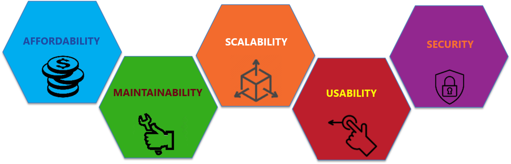

Analytics can deliver rich insights, but it is only when the models are used to empower a wider community that their true value is realised. It is estimated that only 10% of machine learning models make it into production, and hence their real value is never realised, primarily due to:
- Unreliable source data - To allow an application to scale a more robust process to ingest and store data is required.
- Accessibility issues – Solutions must be accessible and intuitive to prospective users.
The sections below outline how EMPEDATA develop applications that solve both these issues and adhere to our 5 guiding principles of application design. Alternatively get in touch to arrange a private discussion to discover how we can support your digital service transformation.

- Affordability - Avoid expensive licence fees by using freely available open-source tools.
- Maintainability - Ensure code is well documented and written using popular, well-supported, programming languages.
- Scalability - Solutions should be designed with growth in mind, ensuring they can continue to satisfy your longer-term aspirations.
- Usability - User interfaces (UI) must be intuitive, engaging and provide the necessary data validation.
- Security - In addition to preventing malicious attacks robust access and permission management is required to ensure users only have access to the information and functionality they are entitled to.
Application design
The approach outlined in the Servitise section defines the desired user experience for either employees or customers, the next stage is to understand how to create and deliver it! Web applications provide an effective means for delivering capability, centralising and securing data to be consumed on a varierty of devices but even then there are a number of options available.
The key issue when selecting an appropriate approach will be a balance between the level of customisation required and the size of budget / skills available to deliver and maintain the project.
Dashboards
For applications focussed on consuming and visualising data a dashboard may be adequate. These can either be delivered through a Business intelligence tool such as Microsoft PowerBI or for a more custom open source solution we often leverage the Streamlit library, which enables web apps to be created using only Python, without the need for separate front-end web development.
Low-code applications
Low-code tools use a visual development approach to application building that empowers non-technical users to build, test, manage, and deploy applications with limited amounts of traditional programming. Low-code platforms achieve this by creating ready-to-use code blocks that can operate within predefined constraints through a simple drag-and-drop interface. These tools also provide a well configured development environment to enable effective collaboration and project management by the team.
Platforms such as Mendix can reduce the barrier to getting started and allow rapid experimentation. The baked-in security and hosting capabilities provide a safe and simple to configure environment, while the free tier provides a great way to prototype applications. They are however more limited in terms of functionality they can deliver and can lock you into their proprietary solution.

Model View Controller (MVC) architecture
When your application extends beyond just sharing analytical models, adopting a Model View Controller (MVC) architecture provides a balance between complexity and control by introducing separation of concerns between the three core elements:
- Model - The backend that contains all the data logic.
- View – The frontend or graphical user interface (GUI).
- Controller – The brains of the application that controls how data is displayed.
Our preferred web development framework for server-side applications is Django, which is used to power a range of well know platforms, including YouTube, Spotify, Instagram and Dropbox. Django promotes itself as "the web framework for perfectionists with deadlines", providing baked-in functionality such as admin panels, file upload, authentication, forms and app management, all of which significantly reduces the time and effort required to build robust web applications.
The ability to directly integrate the Python machine learning and mathematical models, discussed in the Analyse section, provides another significant benefit of selecting Django.
Service-Oriented-Architecture (SOA)
In some circumstances if can be beneficial to further separate the UI and data processing elements of the application using an Application Programming Interface (API). APIs allow a programme to be broken into distinct services, enabling them to be developed in parallel with minimal risk of unintended consequences, so long as the interfaces between the services are maintained. To support this approach Django provides a versatile toolkit for constructing web APIs.
The frontend (client-side) functionality of web application is provided using JavaScript for which a variety of frameworks exist. These frameworks enable developers to take advantage of pre-existing functionality and templates, reducing development time and increasing software quality. React is currently the most used front-end web application framework with a focus on developing common reusable UI components to deliver engaging and intuitive user interfaces and ensure consistency across all applications.
MicroServices
Microservices are an architectural style that structures an application as a collection of loosely coupled services that are maintained and tested independently. These services can be organized around business capabilities and reused where appropriate. The isolation of these services also allows dedicated teams to freedom to use the technologies best suited to the task so long as the interfaces to the other services are maintained.
The key benefit of a microservice architecture is that it enables the rapid, frequent and reliable delivery of large, complex applications however for smaller applications the cost of managing and maintaining them is usually prohibitive.
Effective development

Equally as important as the capability the applications provide are the processes used to build and deploy the service. In the last 10 years DevOps has established itself as software industry best practice, combining cultural philosophies, methodologies, and tools to develop and evolve applications faster and more reliably.
DevOps has connotations of large scale, cloud based applications servicing millions of customers and deploying updates every minute. While this is true of some organisations, such as Amazon, DevOps is principally about creating flow between the various process stages of an applications lifecycle, represented by the figure of eight shown. Through improving communication and feedback, identifying issues early and automating processes where possible the team are given the best possible chance of success.
We outline a few key concepts that should be understood, however for a more comprehensive account of DevOps practices we recommend The DevOps Handbook by Gene Kim.
Scrum
- Agile – When operating in a development environment, where there is a high degree of uncertainty, traditional project management techniques don’t work. Agile, as defined in more detail in the book
Scrum The Art of Doing Twice The Work In Half the Time, is an approach to project management
in which small 2-3 week sprints of activity are planned, each of which deliver a demonstrable package of capability. The four core values of Agile software development as stated by the Agile Manifesto are:
- Individuals and interactions over processes and tools
- Working software over comprehensive documentation
- Customer collaboration over contract negotiation
- Responding to change over following a plan
- Project Backlog – A list of everything that needs to be built or done to make the vision a reality in order of priority.
- Sprint planning – A process of refining the backlog to ensure all the necessary information is available to estimate the relative size of a task and deciding how much of this work can be accomplished in the fixed time window of the sprint.
- Kanban – A visual board used to track the sprint activity status between "to do", "doing" and "done".
- Daily Stand-up – A daily review of a Kanban board in which the team members report on what they did yesterday, what they plan to do today and any obstacles they are facing.
- Sprint Demo – At the end of the sprint the team show what they have accomplished to any interested stakeholders.
- Retrospectives – A meeting in which the team examines how the sprint went and what could have potentially gone better, with the goal of identifying opportunities to improve.
Process automation
- Version control systems - Systems such as Git provide a means of storing, sharing and tracking changes to source code in a special kind of database. This repository is an invaluable source of information that needs to be protected from both catastrophic events and the casual degradation by human error.
- Code Formatting - While software doesn’t care how the code looks, other developers who may have to work on it in the future certainly do. When everyone is writing code that looks the same, it becomes easier to understand and amend. Opinionated formatting tools can be used to enforce styling rules and simplify the process of writing well-structured code.
- Testing - is fundamental to ensure good quality code is being written and allows changes to be quickly validated. The main types of testing are:
- Unit Testing - refers to taking a component of a program and testing it in isolation, these tests can then be automated to validate changes, test dependencies and handling of edge cases.
- Functional Testing - checks the compliance of the overall system against a defined set of criteria. Our favorite testing python library for functional testing is Playwright
- Regression Testing - running previously written tests whenever a new change is introduced to confirm it continues to function as expected.
- Continuous integration – A software development practice where developers regularly merge their code changes into a central repository, after which automated tests validate the code quality. A robust approach to integration ensures bugs are found quicker and reduces the time it takes to release software updates. Our preferred tool for performing continuous integration is GitHub Actions.
Deploying your application
Once up and running the challenge is then to give your site an identity that people will recognise and get them to start using it.
Selecting a name
An often overlooked consideration, when building Web Apps, is ensuring the identity and brand they present align with the company values you are trying to portray. One of the key channels for presenting an identity is the web address with which people will access your service from their browser. This address should be both memorable and relevant and can be achieved through using one of the following:
- New top-level domain - Securing a dedicated top level
.comdomain name (TLD) can be challenging and expensive, but the recent growth of new TLD options such as.digitalallow you to explore more creative and descriptive options. - Subdomain - Websites normally use the subdomain
www.but additional subdomains can be used to access your new service. e.g.https://maps.google.com - Subdirectory - a subdirectory from your existing domain can also be used, as in
https://www.google.com/maps
Hosting
- Statically hosting - enables web pages to serve up the same HTML, CSS and JavaScript to all users who enter the site. As no processing is required on the server these pages are generally faster and can be hosted at minimal, or no cost, on services such as GitHub Pages.
- Dynamic hosting - enables the processing of content and storage of data on the server. Dynamic hosting can be provided on any corporate network or by a cloud service provider such as Microsoft Azure or Amazon AWS.
- Platform as a Service (PaaS) - offer a more managed, low configuration service, making it incredibly easy to get up and running and provides upfront transparency of costs. Our favoured solution is Heroku
Containers
Containers enable an application to be isolated from the rest of the system on which it operates. All the libraries,dependencies and files necessary to run the application are provided from a distinct image, meaning they make an application portable and consistent as it moves from development, to testing, and finally to multiple production environments. Docker is by far the most popular software framework for building, running, and managing containers
Structuring your data
The objective of a good data architecture is to ensure that all the information required to run your business satisfies the 3A's:
- Actionable - It must be able to demonstrate cause and effect, enabling people to learn from actions.
- Accessible - It is essential that the information gathered is available to everyone who needs it and that it can be easily integrated into other applications.
- Auditable - Data often tells a story that is uncomfortable or challenging for people within the business. It is therefore essential that absolute confidence can be placed in the reliability of the source.
Having created a Data Lake, it will probably become apparent that different, contradictory, versions of the same data exist and require significant work to convert it into a format suitable for analysis. To manage this situation it is necessary to create a process for extracting the data from multiple sources, transforming it into a cleaned format and loading it into a structured database, called a Data Warehouse. This process of transforming and storing the data in a format optimised for a specific business purpose is commonly referred to as an ETL process.
The problem arises as new unstructured data needs to be ingested into the Data Warehouse. The solution is to build an application, as defined above, to collect and validate the data at the point of entry. This data is then stored in a dedicated database, known as a Data Mart, which in turn forms a component of the wider Data Warehouse capability. Depending on the data requirements of the application the Data Mart may be considered as either:
- Independent - Created by drawing from operational or external data sources which would otherwise reside with individuals and be inaccessible to the wider organisation.
- Hybrid - combines input from a Data Warehouse, operational systems and external systems
- Dependent - built by drawing data from the existing central warehouse generally used for enhanced security and performance.
Ultimately, the data being collected needs to be stored in a database; for which there are a variety of choices available, each with their own strengths and limitations.
- Relational databases are the standard solution, providing a strict structure/schema, ensuring the data they contain satisfies a predefined list of components, making it easily accessible and significantly reducing the chance of errors.
- Non-relational databases are more forgiving in their structure. Instead of tables with columns and rows, they have collections made from different categories allowing records of varying shape to be stored.
- Graph databases are a relatively new form of database that capture both the entities and relationships between the different data points. These databases rose to prominence with the growth of network analytics, as used extensively by Facebook and Google.
A combination of PostgreSQL and Neo4j satisfy the requirements of all web application data platforms. They both satisfy all of the 5 tool selection criteria outlined at the top of this page and can be easily integrated with Django.
- Neo4j is the world’s leading graph database graph database and is capable of providing fast high integrity graph storage. It comes with a dedicated query language that provides fast read and write performance and wealth of training materials to help you get started.
- PostgreSQL is a hybrid database, while traditionally considered as a relational database, Postgres has recently included the ability to store JSON and XML data formats, which provides the required NOSQL capabilities. Additional strengths of PostgreSQL include integrity controls that can prevent invalid or orphan records and high performance through advanced indexing and full-text search methods.
Security
When building an application security is paramount. A popular coding paradigm of "secure by design" ensures that feared events or macro outcomes are considered at the outset and the necessary precautions are taken to manage the associated risk. Key considerations include:
Access control
Ensure that users are only granted access to the content and features that they are entitled to, through a robust login and permission management system. Django provides a robust authorisation system that can easily be extended to provide comprehensive a role based access control (RBAC) system. Another key consideration when producing robust production applications is to perform admin hardening and adding two-factor-authentication as detailed in the provided link.Attack vectors
The next type of threat to guard against are malicious attacks that can potentially compromise your site. One of the main benefits of using Django is the comprehensively tested libraries and built-in security features it provides that protect against a variety of attacks, however care must be taken when using 3rd party or out of date packages.
Typical threats include:
- SQL injection- occurs when a malicious user can execute arbitrary SQL code on a database which can result in records being deleted or data leakage
- Cross-site scripting (XSS)- The attacker is able to inject small bits of code onto web pages that can subsequently be displayed on other people's browsers.
- Cross-Site Request Forgery (CSRF)- exploits that trust a site has in a user submitting a web request that they did not intend. This may cause actions to be performed on the website that can include inadvertent client or server data leakage
- Denial-of-Service (DoS) attack - tries to make a website or network resource unavailable by flooding it with malicious traffic so that it is unable to operate
Testing and assurance
Despite your best efforts to write clean code and taking the appropriate precaution to control user inputs and data being entered into your application tests provide additional assurances that the potential threats are being appropriately managed
Three commonly used types of security testing are:
- Static Application Security Testing (SAST)- It performs on the source code level, and is able to dig into code quality to ensure it's maintainability and reusability. Our favourite static code analysis tool is SonarQube.
- Penetration testing - evaluate the security of a system by simulating an attack on the system to identify vulnerabilities and assess the system's defences against these attacks.
- Stress testing - is then used to understand how the system behaves under excessive loads.
Getting noticed
Creating a Brand
Another key channel is the logo used for your site which will feature prominently in the header of the website, on the user's browser as a favicon and as an icon on their home screens, it may even be used on marketing literature to promote your service. When selecting a logo there are four main principals that should guide your selection:
- Appropriateness - The logo should convey your brand message to the target audience.
- Simplicity - A minimal and simple logo tends to attract people more easily.
- Scalability - The logo design should work whether it is the size from a tiny favicon to a giant billboard.
- Timelessness - It takes time to gain brand recognition, so choose a design that will last.
Styling
Equally important is a consistent look and feel across your application, which will both improve the user experience and support your brand identity. CSS frameworks, such as Bootstrap enable professional and highly responsive websites with standardised icons, buttons and navigation components to be created with relative ease. While for more advanced applications design systems, such as Material Design by Google, provide more sophistication, introducing state management and interactivity to make controls feel tactile and responsive.
Digital Marketing
- Search engine optimisation (SEO) - is the process of optimising websites so that they rank well on search engines through organic (non-paid) search. A search engine works by matching the user search query with information ascertained from the site meta descriptions, titles, loading speeds, links and keywords to determine the order in which they appear. By structuring your site well, you can increase the likelihood of it being prioritised in the results. For more information check out the Google SEO starter guide
- Paid Search - To rank well on more generic search keywords it will be necessary to invest in paid search advertisements. Paid search works on a pay-per-click model, meaning you only pay when somebody accesses your site from the displayed advert. The rate you pay for a click varies based on the keywords you select, with more popular terms being considerably more expensive. For more information the Google Ads site provides a useful guide to developing your advertising campaign.
When developing your adverts it is important to ensure that the clicks you receive result in conversions, in the form of sales, contact form submissions or other metrics that are important to your business. By setting up your advertising properly you can ensure you target specific users, then using website analystics you can track their activity to measure the effectiveness of your campaign.
The EMPEDATA difference

We know, as an SME, you need solutions that are reliable and affordable! That's why EMPEDATA focus on simplicity and clarity, using powerful open-source tools to deliver robust solutions. The application code we create is yours, meaning you are free to make any changes as your business needs develop, while the comprehensive documentation and the built-in unit tests we provide ensure any changes can be quickly assessed and validated. Where possible our solutions are built using Python because:
- Popularity - Python has overtaken French as the most popular language taught in primary schools, meaning access to people with knowledge of Python is relatively easy
- Readable and Maintainable Code - Python places great emphasis on code readability enabling you to maintain and update the software with the minimum of time and effort.
- Robust Standard Library - A wide range of thoroughly tested modules pre-exist that can be used directly to provide the functionality you require in your application.
- Active user community - Ensures there is plenty of support available on forums such as Stack Overflow for any issues you may encounter
If you think we can support you on your digital service transformation, please fill in the form on our contact page to take the first steps on your digital service transformation journey!
Learning resources
Free resources
- Introduction to HTML- Learn fundamental HTML skills and build your first webpage
- W3 schools - Detailed explanations of the key web development tools (HTML, CSS and JavaScript).
- React - An introduction to introduce you to modern JavaScript-based web development including React
- Django - A guide to backend development using Django
- Full Stack Python - Resources to help develop your Python skills to develop web applications
Paid resources
- Python for Everyone- An introduction to the Python programming language
- IT Automation with Python - Covers a lot of concepts like version control and testing
- Django for Everyone - Backend web development using the Django framework
- PostgreSQL for Everyone - A complete guide from basic to advanced SQL skills
- Basic HTML, CSS and JavaScript - Intro to Frontend Web Development
Recommended books
- The DevOps Handbook by Gene Kim
- Pro Git by Scott Chacon and Ben Straub
- The Data Warehouse Toolkit by Ralph Kimball
- Graph Algorithms: Practical Examples in Apache Spark and Neo4j by Mark Needham & Amy Hodler
- HTML & CSS by Jon Duckett
- JavaScript & jQuery by Jon Duckett
- Django by William Vincent
- The Road to React by Robin Wieruch
Project Portfolio